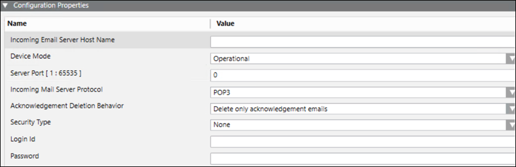

(Optional) Create an Incoming Email Server
- Select the SMTP Email field network.
- Select the Network Editor tab.
- Click Create
 .
. - In the New object dialog box, do the following:
- Select Incoming Email Server as the Child type.
- Enter a Name.
- Enter Description.
- Click OK.
- In the Device Editor tab that displays, enter a description in the Device Settings expander.
- In the Configuration Properties expander, configure the parameters for Incoming Email Server as stated below:

- Enter the host name or the IP address of the Incoming Email Server in the Incoming Server Host Name field.
- From the Device Mode drop-down list, select Operational so that the driver processes the messaging command and the device configuration change command, and performs status checks for the device. You can also select the following:
- Disabled: In this mode, the driver does not process the messaging command, or the device configuration change command, and can perform status checks for the device. The device remains in a disconnected state.
- Administrative: In this mode, the driver processes the device configuration change command and performs status checks for the device. The device will be in a Disconnected/Connected state based on the connection state. - Enter the port number to use for the Incoming Email Server in the Server Port field.
- Select the Server Protocol for the incoming email from the Incoming Mail Server Protocol drop-down list. For example, POP3 or IMAP.
- Select the deletion behavior for the acknowledgements from the Acknowledgement Deletion Behavior drop-down list:
Delete only acknowledgement emails - The driver deletes only messages that are recognized as MNS acknowledgement messages from the email account after processing them. Use this option if the configured email account is also used for other purposes. Choosing this option might require periodic, manual purging of non-MNS messages in the email account.
NOTE: The ‘Out of Office’ replies are not considered as a valid acknowledgement and hence will be deleted on selecting this option.
Delete all incoming emails - The driver deletes all messages whether they are recognized as MNS acknowledgement messages (deletion after processing) or non-MNS messages. Choosing this option allows the system to run unattended because non-MNS messages will not collect in the email account. - Select the desired security option from the Security Type drop-down list, you can select the following:
- None: No secure connection provided.
- SSL: Secure Sockets Layer (SSL) provides secure connection.
- TLS: Transport Layer Security (TLS) provides secure connection. - Enter the SMTP Server’s user name in the Login Id field.
- Enter the SMTP Server’s password for the corresponding user account in the Password field.
- Click Save
 .
.
- The Incoming Email Server is created.